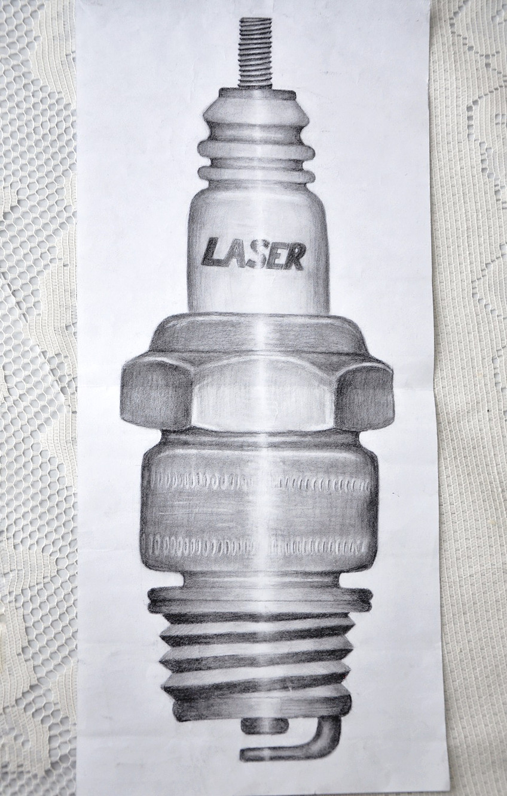
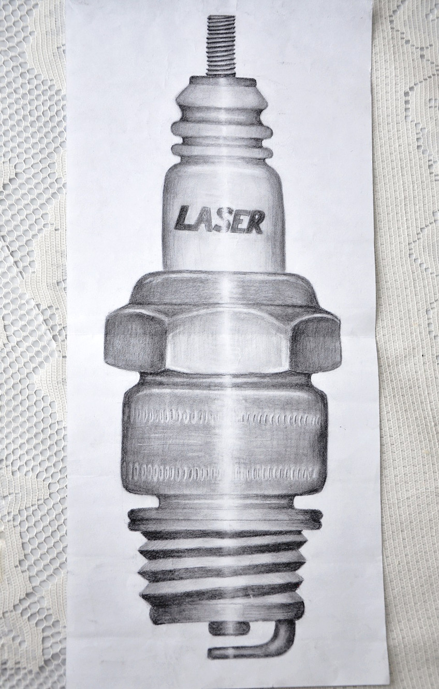
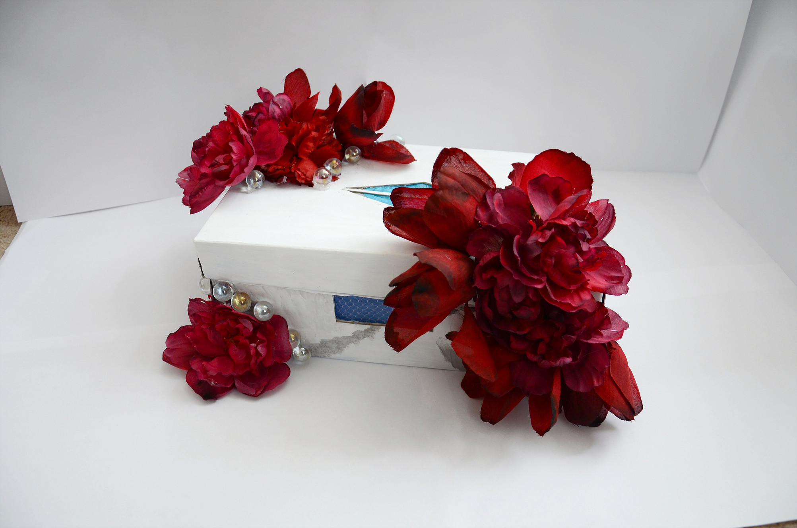
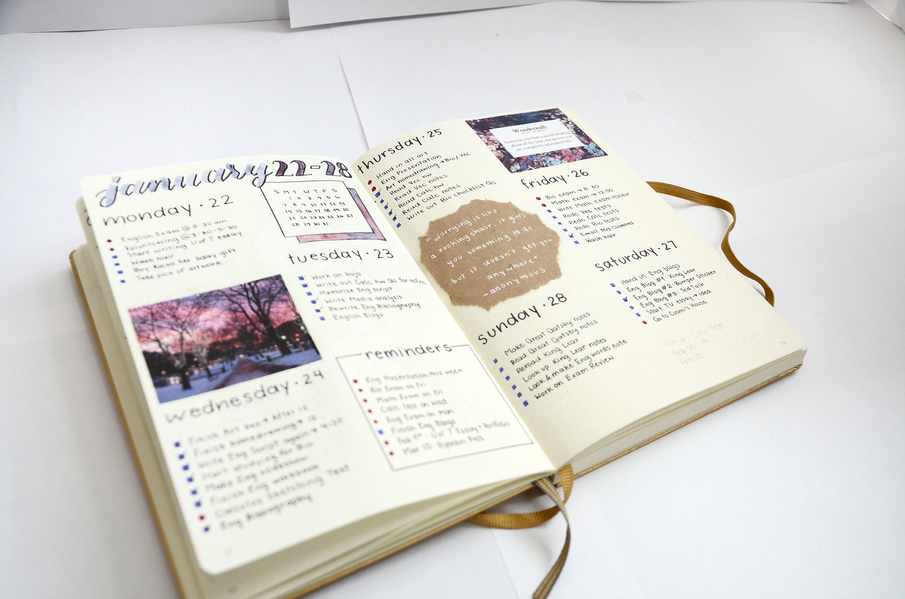
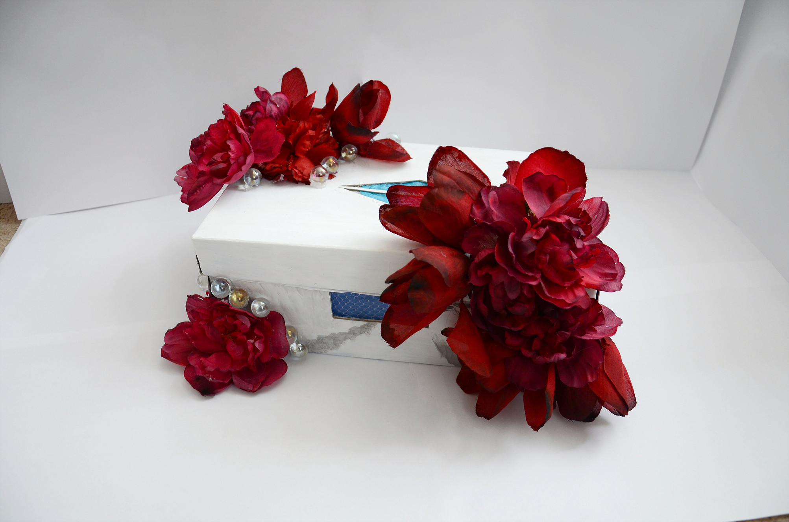
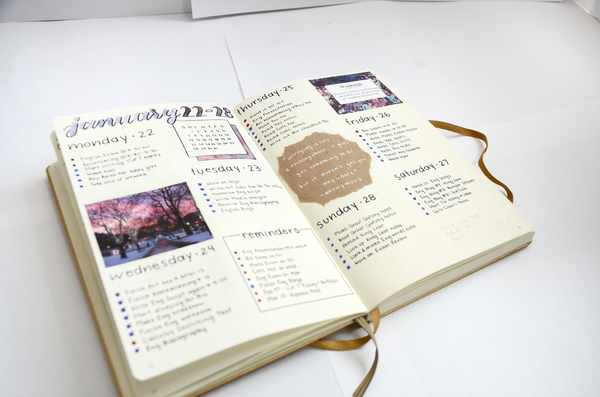
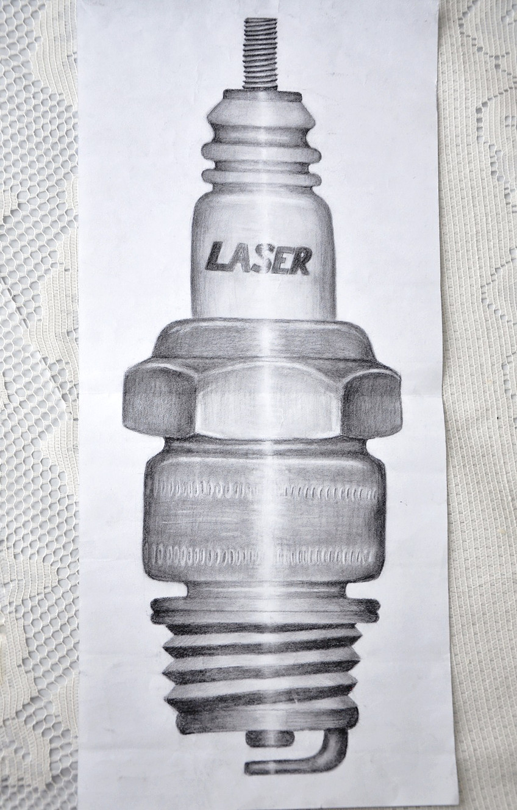
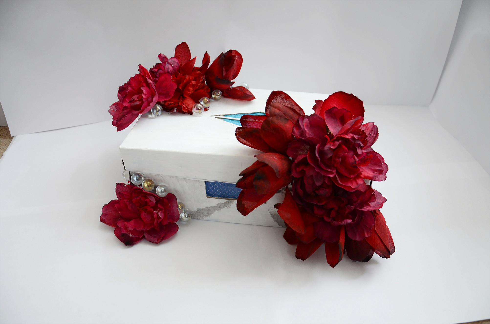
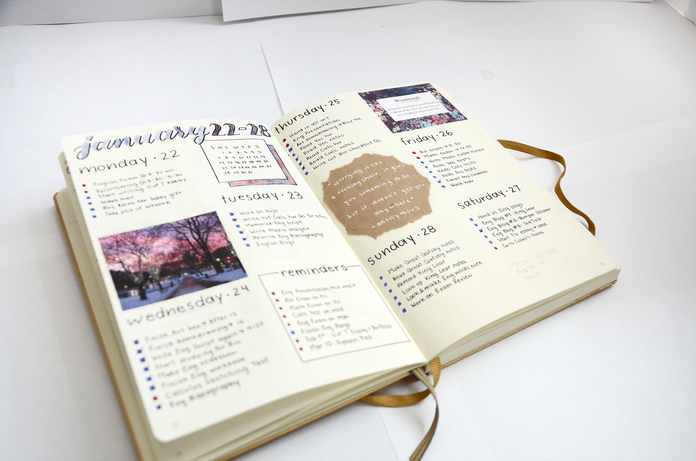

 



×




Keeping a bullet journal and an account to track myself is a good way I like to keep myself organized and up to date monthly. When I'm too busy to sketch, I like to use my creativity to plan a new lay out for my bullet journal. While I no longer post as often on my account, I still continue to have a passion for bullet journalling, continuing on even without online validation.
This spark plug was drawn was drawn as my very first assignment in my ninth grade art class, in 2015. Using graphite pencils and a kneadable eraser, I created the affect of light shining on top of the small metal plug and the look of dimentions.
For homework, in 2015 I was asked to draw a spoon in a glass of water. With such an usual task, I set up my glass of water and spoon on top of my table. In order to make the drawing procedure simpler, I took a picture and filtered it to know where the black and white parts resigned. With this new found information, I was able to finish my assignment and have a new and useable technique.
While this is featured in my Art Gallery project, this was also my very first sketch with higher quality pencil crayons. I used a range of colours in order to create depth in the image.
I often sketch in my free time in order to gain more experience with pencils. My constant practice created a solid foundation for when I worked on art projects. Here, some of my favourite pencil art (graphite pencil, pencil crayon) is shown.
Asked to draw an old person in my twelfth grade art class, I decided to take upon a challenge: imitating skin details with the combination of stippling and shading. At first, I found it difficult to not exaggerate the wrinkles into looking too fake, but the more I did, it become more of a constant process and less of a hassle.
With a pack of crayola pencil crayons, but a vision in mind, I wanted to use my former love for Harry Potter as an inspiration to this "line" drawing. Every object was connected in some way, forming a long line up. To my best of my abilities, in 2015, I used crayolas with my knowledge on shading and proportion to create this piece.
In the eleventh grade, during our art history unit, we had to create an interesting note that touched base on all important facts taught in that unit. Using different fonts and size of words, I made the information easier to read. The addition of pictures made the note more understandable, as the reader could better understand the topic.
When experimenting with watercolour and pens, instead of sketching the flowers first in pen and the painting overtop, I decided to try something new. With the thought of overlapping in mind, I first splashed some watercolour onto the paper, and then went overtop to finish by outlining using a ballpoint pen.
By experimenting with the use of watercolour on paper, shapes, and the formation of colour, I created this. While no colour directly changes into the one beside it, they're all fairly similar and close.
Not all my assignments done for school were so closely linked they could all put into a similar category. With different mediums and different reasons to be made, I categorized all these pieces that while I'm still proud of them, there's not much correlation between them.
In the ninth grade, I used a ruler and a circle maker to make this repeating radiograph. Using only two contradicting shades in order to add more interest to the drawing, made the drawing seem more complex but also more simple.
For a clay project in the ninth grade, we had to draw our house before we actually got to sculpt it. Using a ruler and sitting outside my house, this was my end result.
Some figure drawings
Using a white pencil crayon on black paper, I had to understand how light would shine. This was in reverse to my previous knowledge gained through graphite pencil custom, where shading was done to show the shadow. Additionally, I was learning human anatomy, the different proportions of the human toe bones, and the different textures of bones, compared to my usual drawings featuring skin as the main focus.
With the use of multiple mediums (pencil crayon, white pencil, graphite pencil, fine liner, ballpoint pen), I got to experiment in 2017 (grade eleven) how each one worked in comparison to the others. For example, the ballpoint pen was similar to the pencil crayons where you could layer it one on top of the other, but the fine liner was permanent as soon as placed, so mistakes were difficult to handle.
Asking to draw a more unique version of the skeleton in 2017, I decided to continue with my style, but without the aid of a picture, adding a hand in order for the skeleton to cleverly sniff a flower for his instagram.
These projects were worked on with a variety of different mediums: white pencil crayon, graphite pencil, pencil crayons, felt tip marker, and ball point pen. Different items were drawn in order to see the different textures and learn how to better illustrate them.
For this project, attention to detail was very important. There were multiple bones in different directions (and colours) needed to be drawn and a light shining part of the skeleton's body. I had to be careful with the tiny details as well, such as the placement of the teeth and spinal cord.
Four glass bottles of different sizes and styles, one wooden box, and four flowers had to be drawn for this image. Using the skills I had been taught and learned myself through practice, I was able to add texture, light, and depth to distinguish each piece from one another.
For an English project in 2015, I was asked to illustrate in some way the novel I had read, "Hey Nostradamus". While other students had chosen to make a video report or write an essay, I decided to showcase the loss of youth, but the belief of God through a painting. The novel was about the aftermath of a school shooting, and the main protagonist was still hopeful, even though he greatly needed support. I showed this by using colour to show the hope, black to signify his depressed state of mind, and white, as his past girlfriend is now an angel, and in order to move on, he must accept what had happened.
Using professional acrylic paint from school and from the dollar store, no matter the price, I wanted my style to still shine through. My message and personality should be able to be witnessed through the hopeful and bright pieces, which is what I wanted to accomplish with these two pieces.
In the eleventh grade, I worked for the very first time with thick paint, and learned that it was very different to what I was used to: using water to decrease the shade of a colour. Instead, I had to add an additional amount of white/black/lighter shade of a colour in order to alter the shade. I also found out that too much white and black in a colour results in a muddy grey tone. I learned new brush techniques and depth with a new medium.
Nature (outside surrounded by rock, ocean pearls, flowers from land, and white clouds on the inside)
Using acrylic paint, I took on the challenge to create depth and realism through the mixture of colours. A hole is positioned directly in front of the observer, since eyes are what we see first and how we are able to silently still express emotion, even if unwilling.
I worked with what I had, plasticine, in order to create a human. Since we use the oxygen plants give us, and give nothing in return, I made the flowers surround the man, as if he owned them.
If observed with more detail, you can see that even the wall paper is full of flowers and the outside box is covered in flowers, in order to signify that the world is made of nature and plants, and while we are the majority of the animal population, we did not create nor own this planet.
I used a stamp to create these flowers, by precisely carving.
Using pencil crayons, I displayed another human, not wearing clothes, but embracing nature.
Using watercolour, a bright yet faint medium, I painted a butterfly, standing on a flower, showing us that even the little things in nature are beautiful.
I also painted landscape of a small farm, surrounded by forestry. A take on our version of the world with remaining elements of nature.
When peering inside the box through the two designated holes, the blue adds a tint, to not let the observer that the sky is naturally blue, and so is the sea.
pandastudi@gmail.com